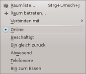

IRC
Archivierte Anleitung
Dieser Artikel wurde archiviert, da er - oder Teile daraus - nur noch unter einer älteren Ubuntu-Version nutzbar ist. Diese Anleitung wird vom Wiki-Team weder auf Richtigkeit überprüft noch anderweitig gepflegt. Zusätzlich wurde der Artikel für weitere Änderungen gesperrt.
Zum Verständnis dieses Artikels sind folgende Seiten hilfreich:
Seit Version 7.50 ist in Opera ein IRC-Client integriert. Neben den Basisfunktionen des IRC unterstützt dieser Direct Client-to-Client. Dieses Protokoll gestattet es, eine direkte Verbindung zwischen Benutzern aufzubauen, um z.B. Dateien auszutauschen oder eine schnellere und abhörsicherere Unterhaltung zu führen.
| Einrichtungsassistent |
| Chatrooms |
| Kanäle in der Seitenleiste |
|  |
| Menü |
Einrichtung¶
Über "Extras -> E-Mail- und Chatkonten" richtet man einen Zugang ein. Nach Bestätigen der ersten Frage wählt man im sich öffnenden Fenster den Punkt " Chat (IRC)" aus. Nun die entsprechenden Felder Name und E-Mail-Adresse eingeben und bestätigen. Im folgenden Fenster den Nickname eingeben und bestätigen. Als IRC-Netzwerk den Server von FreeNode, Europa auswählen. Die Grundeinrichtung ist hiermit abgeschlossen. Bei jedem weiteren Aufruf des IRC werden die soeben gemachten Einstellungen geladen.
Ubuntuusers¶
Als Chat in der Suchleiste ubuntuusers eingeben und in diesen "Eintreten". In einem neuen Tab des Browsers öffnet sich nun der Channel von ubuntuusers. Dieser ist mit einem entsprechenden Symbol optisch hervorgehoben.
Die Community bietet auf irc.freenode.net eine Vielzahl von Kanälen an. Eine kleine Auswahl findet man im Artikel IRC. Manche Kanäle sind passwortgeschützt. Opera fordert in solch einem Fall die Eingabe des Passwortes.
Alle besuchten Kanäle werden in der Seitenleiste angezeigt. Um diese ein- bzw. auszublenden, anwählen. Neben dem verwendeten Server und den besuchten Räumen werden aktive Räume hervorgehoben und die Anzahl der angemeldeten Benutzer angezeigt. Über einen Rechtsklick auf irgendeinen Raum gelangt man zu einem weiteren Menü, das es gestattet, Räume aus der Liste zu entfernen.
Kontoeigenschaften¶
Über "Extras -> E-Mail- und Chatkonten -> Freenode, Europa -> Bearbeiten" können diverse Zusatzeinstellungen vorgenommen werden. Alternativ dieses Fenster über das Seitenpanel öffnen und einen Rechtsklick auf den oben angegebenen Server ausführen und "Eigenschaften" anwählen.
Registrierung¶
Sofern man den eigenen Nick noch nicht registriert hat, kann man hier der Anleitung im Artikel IRC folgen. Damit beim Login das Kennwort automatisch übergeben wird, muss man dieses unter "Server -> Passwort" hinterlegen.
UTF-8¶
Unter "Postausgang -> Standardkodierung" kann die Zeichenkodierung nach UTF-8 geändert werden.
Unter den verschiedenen Reitern können außerdem die Portbereiche verändert sowie Einstellungen zum Umgang mit hereinkommenden Verbindungen und Privat-Chats vorgenommen sowie allgemeine Einstellungen (Nickname, E-Mail-Adresse,...) verändert werden.
Chat¶
Im Opera-Browser erscheint nach dem Einrichten ein neuer Menüpunkt "Chat". Über diesen können weitere Funktionen erreicht werden.
| Chat | |
| Button | Beschreibung |
| "Raumliste" | Anzeige aller auf dem Server verfügbaren Chaträume. |
| "Raum betreten" | Direkte Eingabe eines Chatraumes z.B. #ubuntuusers |
| "Verbinden mit..." | Auswahl der hinterlegten/ausgewählten Server z.B. FreeNode, Europa |
| Nickname im IRC ändern. | |
| Smiley einfügen. | |
| Optionen für den Kanal setzen. | |
Im unteren Teil des Drop-Down-Menüs kann man den Status für den IRC auswählen z.B. wenn man abwesend ist. Diese Information ist für andere Chatteilnehmer ersichtlich. Auch über die Seitenleiste kann der eigene Status verändert werden.
Zusatzfunktionen¶
Um die Zusatzfunktionen zu erreichen, führt man einen Rechtsklick  auf den Nickname eines anderen Benutzers aus.
auf den Nickname eines anderen Benutzers aus.
Wer ist das?¶
Über diesen Punkt erhält man Informationen zu einem Benutzer, die sich aus IP, besuchte Kanäle, verwendeter Server, Abwesenheitsnachricht, Loginzeitpunt sowie Inaktivität zusammensetzt.
Privatchat¶
Diese Option erlaubt es, mit einem anderen Benutzer des IRC private Nachrichten oder Dateien zu tauschen.
Aussehen¶
Das Aussehen sowie das Verhalten des Opera-Chat kann durch Bearbeiten der Datei /usr/share/opera/style/im.css mit einem Editor [1] und Root-Rechten verändert werden. Im Vorfeld sollte man jedoch sicherheitshalber eine Kopie der zu bearbeitenden Datei anlegen [2]:
sudo cp /usr/share/opera/styles/im.css /usr/share/opera/styles/im.css.bak
Informationen zur Verwendung von CSS findet man unter selfhtml.org 
Themes¶
Eines der folgenden Themen nach /usr/share/opera/style/im.css verschieben [3]:
im.css.bak
 - Originaldatei
- Originaldateiim.css.opera
- Operaim.css.xpstyle1
- XP-Style 1im_1.css.girlie
- Girlieim_2.css.easter
- Osternim.css.adaptive
- übernimmt Einstellungen vom verwendeten Opera-Thema
Verhalten¶
Folgende Ergänzungen kann man unter anderem vornehmen:
Textformatierung entfernen¶
Einige Instant Messenger gestatten es, Textformatierungen zu senden. Dies kann dazu führen, dass der dargestellte Text schwer zu entziffern ist. Um diese zu deaktivieren, in der Datei folgendes am Ende einfügen:
1 2 3 4 5 6 7 8 | span[style] { text-decoration: none !important; color: inherit !important; font-size: inherit !important; font-family: inherit !important; font-weight: normal !important; background-color: transparent !important; } |
Smileys¶
Austauschen¶
Die Smileys werden in der Regel vom verwendeten Theme bestimmt. Möchte man eigene verwenden, so passt man die entsprechenden Zeilen an:
Ursprungseintrag:
1
background-image: -o-skin("Smiley Grin");
Eigener Eintrag:
1
background-image: url(PfadzumIcon/Icon.png);
Hinweis:
Die Smileys dürfen nur 16x16 Pixel groß sein.
Deaktivieren¶
Um Smileys zu aktivieren, ergänzt man die Datei um folgende Zeilen:
1 2 3 4 5 6 7 8 9 | img { height: auto !important; width: auto !important; background-image: none !important; content: attr(title); position: relative; top: -3px; left: 0px; } |
Statusmeldungen¶
Um Statusmeldungen auszublenden, folgende Zeilen anhängen:
1 2 3 | .join, .leave, .nick, .operator, .voiced, .disconnect, .moderated, .limit, .topic-protection, .password, .secret, .unknown-mode, .join-message, .leave-message, .nick-message, .operator-message, .voiced-message, .disconnect-message, .moderated-message, .limit-message, .topic-protection-message, .password-message, .secret-message, .unknown-mode-message { font-size: 0.7em; } |
Weiteres ist auf howtocreate.co.uk  zu finden.
zu finden.
Tastenkürzel¶
| Tastenkürzel | |
| Taste(n) | Funktion |
| Strg + ⇧ + J | Raumliste anzeigen |
| Strg + M | E-Mail senden |
| Strg + I | Eigenschaften |
- Erstellt mit Inyoka
-
 2004 – 2017 ubuntuusers.de • Einige Rechte vorbehalten
2004 – 2017 ubuntuusers.de • Einige Rechte vorbehalten
Lizenz • Kontakt • Datenschutz • Impressum • Serverstatus -
Serverhousing gespendet von